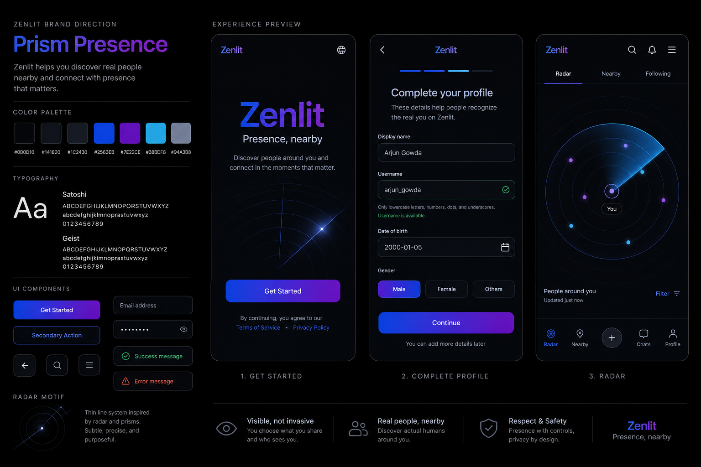

Best For
A premium social discovery app that should feel calm, private, accurate, and high-trust.
Prism Presence brand direction
Prism Presence keeps Zenlit dark and social, but makes it feel sharper, cleaner, and more premium. It uses blue and violet as the brand core, with cyan as a precise signal highlight for radar, visibility, focus, and active system feedback.
A premium social discovery app that should feel calm, private, accurate, and high-trust.
If overused, cyan can make the app feel cold or technical instead of human.
Use Prism Presence only if you want Zenlit to feel more premium and precise than warm and social.

Signal Noir is more familiar and slightly warmer. Prism Presence is cleaner, sharper, and more premium.
Nearlight feels more human and inviting. Prism Presence feels more composed, controlled, and product-led.
“Presence, nearby.” Short, direct, and aligned with the radar/visibility concept.
The main implementation principle remains the same: put the brand in one token source, then import tokens everywhere instead of using raw hex colors per screen.
Satoshi gives Prism Presence a premium, editorial feel. Use it for the wordmark, hero-scale text, onboarding titles, and brand-led section titles.
Geist is cleaner for UI forms, helper text, buttons, and dense screens. It feels precise without becoming decorative.